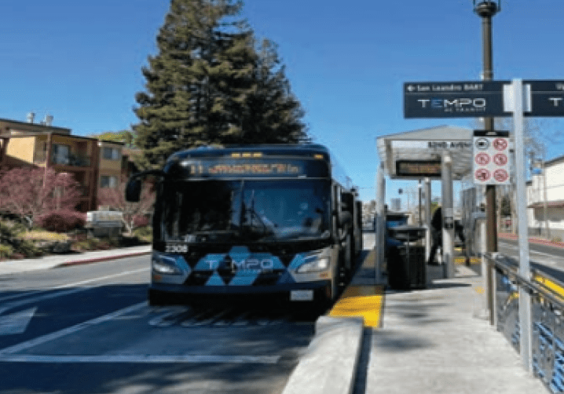
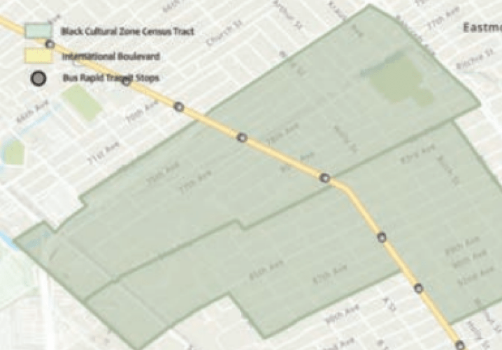
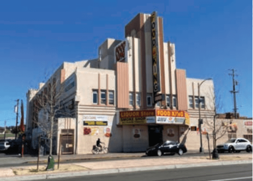
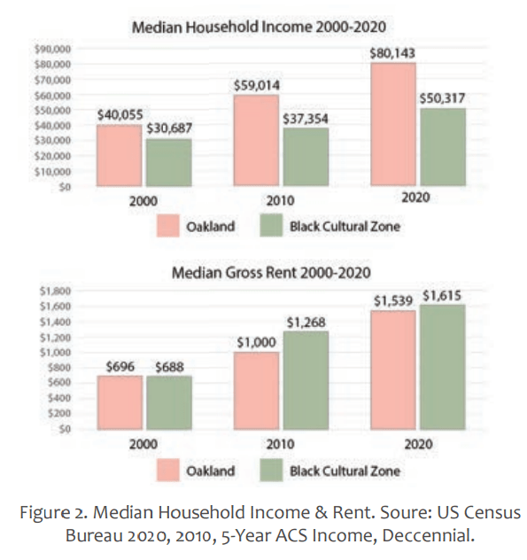

Thanks for visiting
my portfolio —
Oakland, CA
Economic Vitality of Elmhurst Corridor

Overview
01
As part of my Urban Planning Process Studio final , I explored the International Boulevard TOD Corridor’s economic context and how certain planning and policy interventions can create a more just and equitable public realm. By understanding the opportunities and limitations of current policies, we can address historic economic inequities to help these communities.
History & Context
02
Elmhurst Corridor & International Boulevard


BRT Line
The TEMPO 1T line along International first started construction in August 2016 and was completed in June 2020. While the project promotes itself as “safe for cyclists to navigate,” new signals to slow traffic, and new high visibility crosswalks to increase pedestrian safety, there has been an increase in reckless driving in the bus lane and increased congestion because of the reduced vehicle lane. The construction of the line did help to employ local workers and support local economies. And from the Neighborhood Access portion of the HATCH report, the BRT provides potential for 50% growth in bus ridership.
International Boulevard
The BAF was founded for businesses around the BRT line to avoid adverse permanent impacts from BRT infrastructure changes and included the area around the Elmhurst corridor. Prior to the pandemic, the BAF funding comprised of 1,000$ which was shared with other neighborhoods in Zone 2 (Zone 2 comprises of an area west of Lake Merritt Blvd. and east of 52nd Avenue). Most recently, due to the COVID-19 economic crisis, the city passed a resolution that enabled BRT businesses in Zone 2 to use up to 10.000$ of BAF funds for operating costs if they can prove the impacts of COVID-19 on their business.
Elmhurst Corridor
Elmhurst Corridor has a high rate of poverty at over 1/5th of its residents. This is seen on the streets by multiple homeless encampments along International Boulevard, deteriorating buildings, empty lots, an abundance of liquor stores, and homeless services like food drives and shower stations.

Research Question
How does the history of injustices in our study area of Elmhurst Corridor along International Boulevard explain current manifestations of economic inequality and what future policies can be drafted to address these underlying issues?
Economic Analysis
03
Change Over Time
The Elmhurst Corridor’s economy has changed over the past 20 years. Its median income is growing, but not at as fast a rate Oakland. In 2020, the difference in incomes between Oakland and the BCZ was 3 times the difference from 2000. At the same time, BCZ’s median rent is increasing at a larger rate than Oakland’s. In 2000, the BCZ’s median rent was lower than Oakland’s, but in 2020, it was higher. As housing prices increase without a similar rise in income, residents have to pay more of their income toward rent.

Poverty
As housing costs in the Bay Area rise, people in poverty bear the most burden as they have to pay a larger proportion of their net income on housing compared to wealthier residents.
According to the Census Bureau, 18.5% of families of 3-4 people in the Black Cultural Zone live in poverty, compared to 14% in the City of Oakland. The poverty rate for a family of 4 in the Bay Area is $40,000 per year according to a study from the University of California, Berkeley and Tipping Point Community.
Using 2020 ACS Census data of Oakland’s median gross rent $18,468 and the US Department of Transportation’s 2020 average household transportation costs of $9,826, the pie charts show how people in poverty are spending a higher pro portion of their income on essentials. Since people in the Black Cultural Zone are more likely to be in poverty, they face economic inequity.
Transformative Climate Communities (TCC)
Housing affordability is crucial for economic equity and will be beneficial for the small businesses that operate in the Elmhurst corridor. A variety of net benefits will be added into the calculus of long term economic success if housing accessibility and equity is ensured.
- Employee retention can be ensured as many small business workers can live in the neighborhoods they live in.
- Building long term economic and social integration in the community and improving the sense of placemaking for its citizens.
- Contribution to the local economy by attracting other businesses and increasing tax base.
The TCC grant encompasses a project that includes a 55 unit affordable, mixed-use development with a community-serving health clinic on the ground floor. The development is a public-private partnership with priorities such as community engagement, displacement avoidance, and workforce development. The city hopes that in the long run, these initiatives will build community wealth and ensure housing as a human right for neighborhood residents.
Akoma Market
An example where the city partners with a coalition of residents, churches, grassroots groups, and NGOs to create a space where local, POC, and women owned businesses can start and set up shop for the public. Economic equity, wellness, and com munity are emphasized at the core of the farmers market. A mix of emerging and legacy businesses operate at the Akoma Market where these businesses are able to operate for free. There are no stipulations required to open a shop and the focus is more towards providing community basic necessities.
Small Business Week & Incubation
Small Business Week is an initiative by the city to provide training and educational webinars and workshops to small businesses across Oakland, including in the Elmhurst Corridor. The city partnered with a number of organizations to present these webinars. Business incubation is another way the city wants to make business entry easier for anticipated entrepreneurs. Partnering with other NGOs, groups, and firms, the aim is to have fledgling business owners work out of a space that may be subsidized and to allow the business to grow to eventually where the business owner can own their own storefront. Land trusts and no- to little- interest loans may help make the process easier if the business owner meets certain equity criteria.
Check out my other projects
04